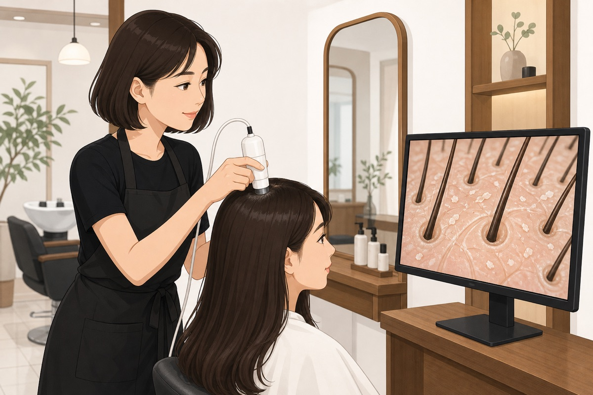
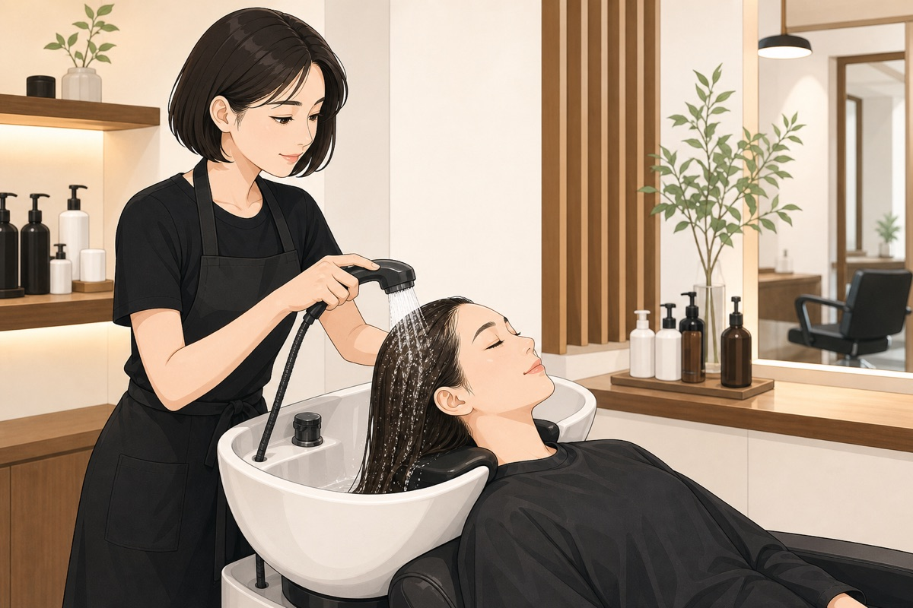
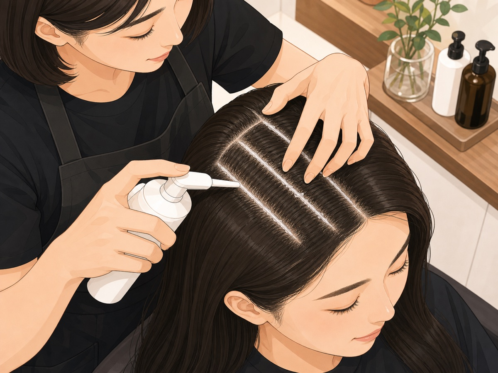
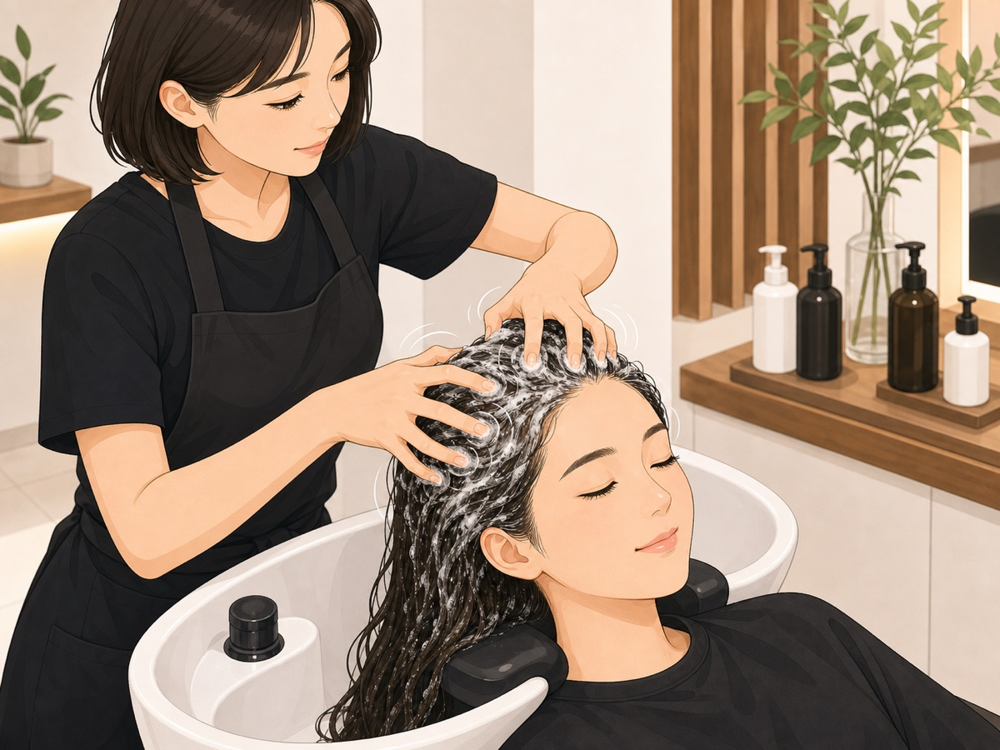
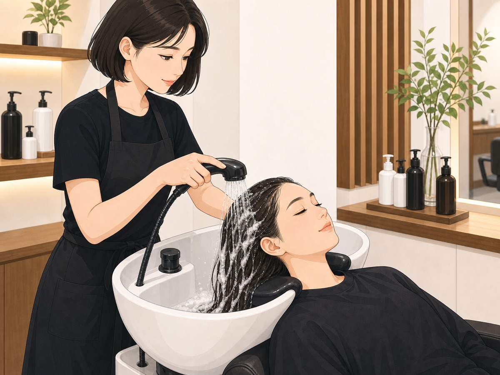
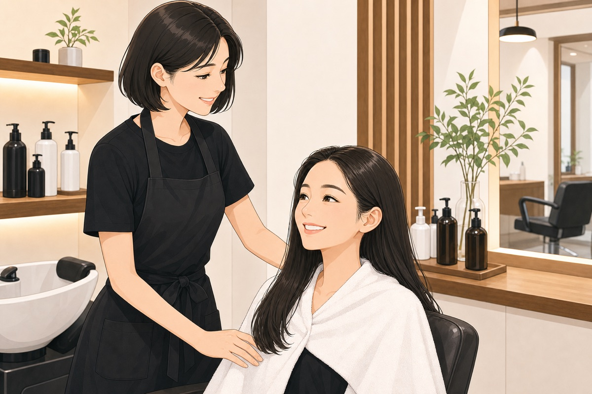

ใช้กล้องตรวจหนังศีรษะ ส่องจุดสำคัญ: กลางกระหม่อม / ด้านข้าง / ท้ายทอย — ให้ลูกค้าดูสภาพหนังศีรษะบนจอด้วยกัน (รูขุมขนอุดตัน, ความมัน, เซลล์ผิวเก่า)
💡 สิ่งที่ลูกค้า "เห็นเอง" สำคัญกว่าคำอธิบาย (손님이 "직접 보는 것"이 설명보다 강력)

ใช้น้ำอุ่นชโลมผมและหนังศีรษะให้ชุ่มทั่วทั้งศีรษะ

จ่อหัวขวดให้แตะหนังศีรษะ บีบเป็นแนวห่างกัน 2-3 ซม. ให้ทั่วศีรษะ แล้วนวดให้เกิดฟอง
ปริมาณ: 7ml ต่อครั้ง (1 ขวด = 15 ครั้ง)

เมื่อฟองละเอียดขึ้นเต็มที่ ใช้ปลายนิ้ว (หรือแปรง) นวดหนังศีรษะให้ทั่วเป็นวงกลมช้าๆ
💡 ใช้เทคนิคนวดเดียวกับที่เรียนในหลักสูตรสระผม Level 1 ของร้าน

ล้างด้วยน้ำอุ่นให้สะอาด แล้วสระแชมพูต่อทุกครั้ง (ห้ามจบที่ล้างน้ำเปล่า)

ถ้ามีเวลา ส่องกล้องจุดเดิมกับขั้นตอนที่ 1 ให้ลูกค้าเห็นความแตกต่างก่อน-หลัง